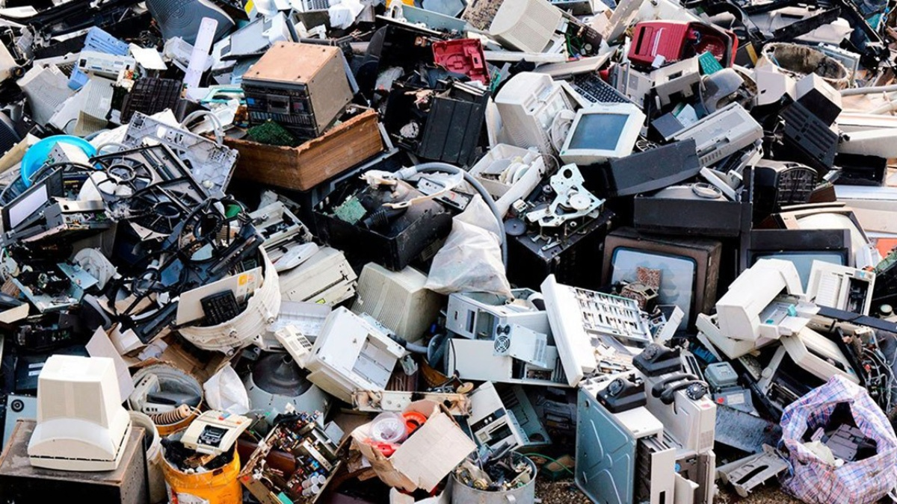

<link rel="stylesheet" href="estilo.css">
<header class="header">
   <div class="menu container">
     <label for="menu">
       
     </label>
     <nav class="navbar">
       <ul>
         <li><a href="#Introduccion" class="selected">Introducción</a></li>
         <li><a href="#Contaminacion">Contaminación</a>
           
         </li>
         <li><a href="#Tipos de contaminacion">Tipos de contaminación</a>
           <ul>
             <li><a href="CTMNC.Agua.html">Agua</a></li>
             <li><a href="CTMNC.Aire.html">Aire</a></li>
             <li><a href="CTMNC.Suelo.html">Suelo</a></li>
             <li><a href="Economia circular.html">Economía circular</a></li>
             <li><a href="Gestion.html">Gestión de Residuos</a></li>
             <li><a href="RSDS.biomedicos.html">Residuos biomedicos</a></li>
             <li><a href="RSDS.electronicos.html">Pagina principal</a></li>
           </ul></li>
       </ul>
     </nav>
   </div>
<h1>Residuos Electronicos</h1>
<p>
Los residuos eléctricos o electrónicos, también conocidos como RAEE (Residuos de Aparatos Eléctricos y Electrónicos),
son aquellos dispositivos o equipos que funcionan con electricidad o baterías y que han llegado al final de su vida útil.
Estos incluyen una amplia variedad de productos, como:
</p>
Electrodomésticos (lavadoras, refrigeradores, microondas)
Equipos de informática y telecomunicaciones (computadoras, teléfonos móviles, impresoras)
Dispositivos de entretenimiento (televisores, consolas de videojuegos)
Herramientas eléctricas y electrónicas (taladros, sierras)
Juguetes y aparatos deportivos eléctricos
Equipos médicos (excepto los implantados o infectados)
<p>
Estos residuos contienen materiales valiosos, como metales preciosos (oro, plata, cobre), pero también pueden tener sustancias
 peligrosas (mercurio, plomo, cadmio) que representan un riesgo para la salud y el medio ambiente si no se gestionan adecuadamente.
  Por eso, es fundamental reciclarlos de forma adecuada para recuperar materiales y evitar la contaminación.
  </p>
  
</p>